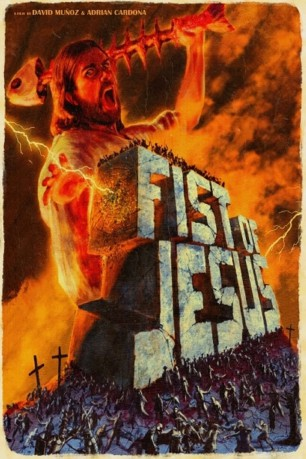

#10855 Fist of Jesus
 gesehen am 03.04.2019
gesehen am 03.04.2019
 
 IMDB-Wertung: 7.0 / 10
IMDB-Wertung: 7.0 / 10  Metascore: 0
Metascore: 0 
Jesus ist gerade mitten im Predigen darüber, wie man sich seinen Mitmenschen gegenüber verhalten soll, als Jakob ihm berichtet, dass sein Sohn Lazarus gestorben ist. Jesus möchte Jakob helfen und Lazarus von den Toten auferstehen lassen. Dies gelingt ihm auch, allerdings mit verheerenden Folgen...
Jahr: 2012
Dauer: 15 Minuten
FSK: 18
Land: Spanien Studio: Alive Vertrieb und MarketingTonspuren:
Untertitel:
Auflösung: 1080p (1920x816) Größe: 733 MB
Genre: Action, Horror, Komödie, Kurzfilm
Regisseur: Adrián Cardona, David Muñoz
Drehbuch: David Muñoz
Soundtrack: J. Oskura Nájera
Darsteller:
- Héctor Escandell als
- Marc Velasco als Jesus
- Noé Blancafort als Judas
- Salvador Llós als Jacobo
- Victoria Roldán als Sara
- Roger Sotera als Lázaro
- José María Angorrilla als Cowboy Boss
- Enrique Villalonga als Roman Squad
- Juan Marí Susierra als Roman Squad
- Fernando Alfaya als Roman Squad
- Fito Delgado als Roman Squad
- Pedro E. Martínez als Roman Squad
- Adri O. Cheke als
- Adrián Gutiérrez als
- Julián López als
- Babel Gayo als
- Ahmed Hadli als
- Monxo als
- Rowena Dulay als
- Javier S. Barea als
- Martín Quintero als
- Susanna Alfaya als
- Juan Prats als
- Javito R. als
- Anna Xantal als
- Loli López als
- David Lorenzo als
- Rafa Campoi als
- Roser Alenyar als
- Carmen Cordón als
- Christina Ladera als
- Estefanía Navas als
- Trinidad Morato als
- Julio Arche als
- Toni Bonet als
- Paloma Cabezas als
Datei: X:\FSK18-2012\Fist of Jesus (2012, FSK18, 1920x816).mkv seit 29.03.2019
Festplatte: FSK18
 Es gibt insgesamt 26 Filme in der Gruppe 'FSK18-2012'
Es gibt insgesamt 26 Filme in der Gruppe 'FSK18-2012'